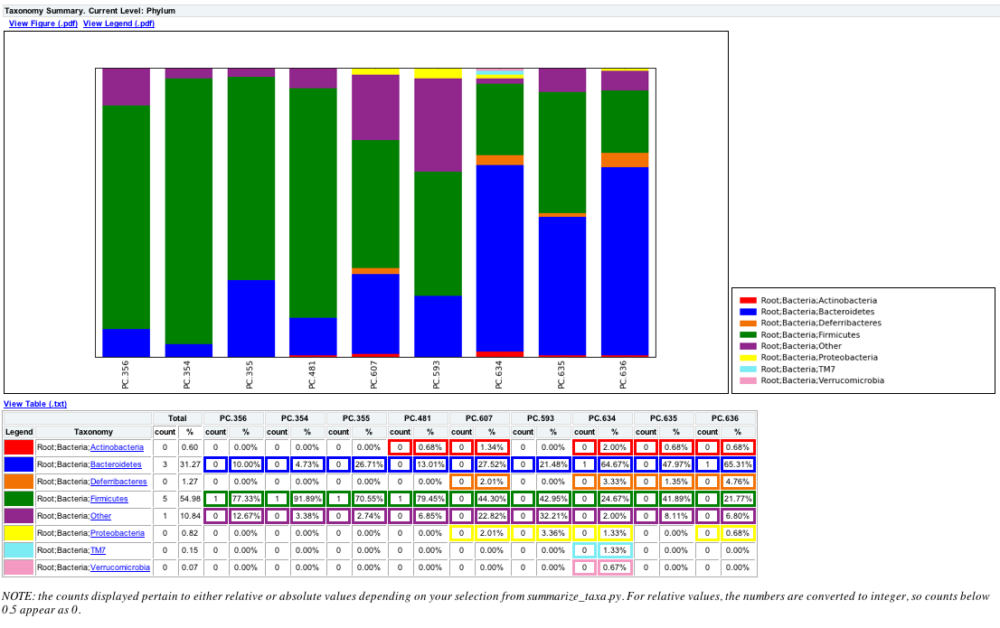

| News and Announcements » |
This document describes how to perform taxonomy summaries for samples or for categories from a users mapping file. We will also illustrate the use of a sorting script that will allow users to sort their OTU table, so the charts will represent that order.
Here we will illustrate how to generate summarized taxonomy charts using the QIIME tutorial dataset.
Users can sort their OTU table using the mapping file and sort_otu_table.py script
sort_otu_table.py -i seqs_otu_table.txt -o seqs_otu_table_sorted_by_DOB.txt -m Fasting_Map.txt -s DOB
The resulting OTU Table will look something like the following, where the samples are sorted by the mouse date of birth:
#OTU ID PC.356 PC.354 PC.355 PC.481 PC.607 PC.593 PC.634 PC.635 PC.636 Consensus Lineage
0 0 0 0 0 0 0 0 1 0 Root;Bacteria;Firmicutes;"Clostridia";Clostridiales;"Lachnospiraceae"
1 0 0 0 0 1 0 0 0 0 Root;Bacteria;Firmicutes;"Clostridia";Clostridiales;"Lachnospiraceae"
where 0 and 1 are OTU ids, and PC.* are sample ids.
Users can summarize their OTU table using one of the column headers in the mapping file and summarize_otu_by_cat.py script.
Note
summarize_otu_by_cat.py -i Fasting_Map.txt -c seqs_otu_table.txt -m Treatment
The resulting OTU Table (Treatment_otu_table.txt) will have category ids instead of sample ids as shown below.
Note
#Category OTU Counts-Treatment
#OTU ID Fast Control Consensus Lineage
0 1 0 Root; Bacteria; Firmicutes; "Clostridia"; Clostridiales; "Lachnospiraceae"
1 1 0 Root; Bacteria; Firmicutes; "Clostridia"; Clostridiales; "Lachnospiraceae"
where 0 and 1 are OTU ids, and Fast/Control are the category ids.
For summarizing the taxa, the following will illustrate the usage based on whether the user performed either Steps 1, 2 or neither, where the user can use the summarize_taxa.py script. For each of the following examples, we will summarize the taxa at the Phylum level (3).
summarize_taxa.py -L 3 -i seqs_otu_table.txt -o seqs_otu_table_summarized.txt
The resulting summarized taxa will look something like:
Taxon PC.354 PC.355 PC.356 PC.481 PC.593 PC.607 PC.634 PC.635 PC.636
Root;Bacteria;Actinobacteria 0.0 0.0 0.0 0.00684931506849 0.0 0.0134228187919 0.02 0.00675675675676 0.00680272108844
Root;Bacteria;Bacteroidetes 0.0472972972973 0.267123287671 0.1 0.130136986301 0.214765100671 0.275167785235 0.646666666667 0.47972972973 0.65306122449
where Root;Bacteria;* are Taxa, and PC.* are the sample ids.
summarize_taxa.py -L 3 -i seqs_otu_table_sorted_by_DOB.txt -o seqs_otu_table_sorted_by_DOB_summarized.txt
The resulting summarized taxa will look something like:
Taxon PC.356 PC.354 PC.355 PC.481 PC.607 PC.593 PC.634 PC.635 PC.636
Root;Bacteria;Actinobacteria 0.0 0.0 0.0 0.00684931506849 0.0134228187919 0.0 0.02 0.00675675675676 0.00680272108844
Root;Bacteria;Bacteroidetes 0.1 0.0472972972973 0.267123287671 0.130136986301 0.275167785235 0.214765100671 0.646666666667 0.47972972973 0.65306122449
where Root;Bacteria;* are Taxa, and PC.* are the category ids, but note that the order of the sample ids are based on the DOB category in the mapping file.
summarize_taxa.py -L 3 -i Treatment_otu_table.txt -o Treatment_otu_table_summarized.txt
The resulting summarized taxa will look something like:
Taxon Fast Control
Root;Bacteria;Actinobacteria 0.0117845117845 0.00135317997294
Root;Bacteria;Bacteroidetes 0.513468013468 0.151556156969
where Root;Bacteria;* are Taxa, and Fast/Control are the category ids.
Now that the user has summarized the taxa, they can generate area, bar or pie charts for their data using plot_taxa_summary.py. Here we will generate bar charts with a white background for each example from the previous step:
plot_taxa_summary.py -i seqs_otu_table_summarized.txt -l Phylum -o bar_charts -c bar -k white
The resulting plot should look like the following:

plot_taxa_summary.py -i seqs_otu_table_summarized.txt -l Phylum -o bar_charts -c bar -k white
The resulting plot should look like the following and notice that PC.356 is now the first sample based on the sorting of sample ids from Step 1:
plot_taxa_summary.py -i seqs_otu_table_summarized.txt -l Phylum -o bar_charts -c bar -k white
The resulting plot should look like the following: